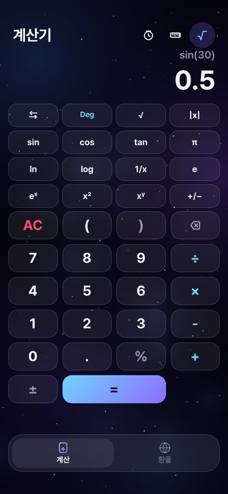
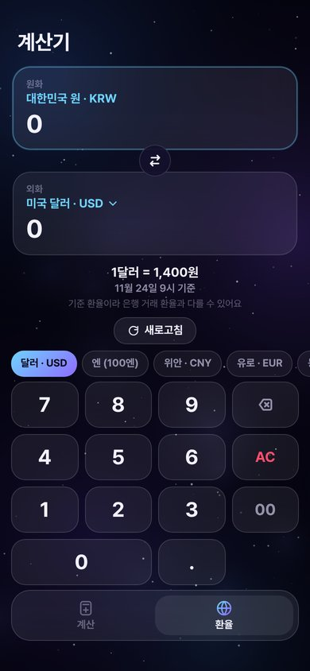

뉴니버스 계산기 v2 (시험판)
버전 2-test · 뉴니버스 고정 서명(런처·전화·문자와 같은 서명) · v1 위에 덮어 설치 · 권한은 인터넷 하나(환율)
내려받기 · 뉴니버스 계산기 v2 (약 0.11MB)
v2에서 새로워진 점
- 공학용: 오른쪽 위 √ 아이콘을 누르면 펼쳐져요. 폰을 가로로 돌려도 열려요. ⇆로 역함수(sin⁻¹ 등)를 켜고, Deg/Rad를 바꿀 수 있어요. √, |x|, sin · cos · tan, π, ln, log, 1/x, e, eˣ, x², xʸ가 있어요.
- 단위 계산기: 오른쪽 위 자 아이콘. 면적 · 길이 · 온도 · 부피 · 무게 · 데이터 · 속도 · 시간 · N빵 · 세금·할인. 위·아래 칸과 오른쪽 키패드, ↑↓로 입력 칸을 고릅니다.
- 면적의 기본은 평 ↔ ㎡예요. 1평 = 400/121 ㎡ (약 3.305785 ㎡). 길이에는 자 · 치도 있어요.
- N빵: 총액과 인원을 넣고, 100원 또는 1,000원 단위로 올림할 수 있어요. 1인당 금액과 남는 돈(또는 더 나오는 금액)을 보여 줘요.
- 부가세·할인: 공급가에 부가세 10%를 더한 포함가, 포함가에서 공급가와 세액 분리, 정가와 할인율로 할인가·할인액 계산.
그대로인 것
- 계산: 더하기 · 빼기 · 곱하기 · 나누기, 괄호, %, ±, 기록, 결과를 길게 눌러 복사.
- 환율: 원화와 외화, 달러·엔(100엔 기준)·위안·유로·동·바트 등. 하루 한 번 정도 갱신되는 공개 기준 환율이고, 마지막 값은 저장해 두어 인터넷이 없어도 쓸 수 있어요. 은행 거래 환율과는 다를 수 있어요.
권한은 인터넷 하나뿐이에요(환율을 받을 때만). 계산 기록과 입력은 폰 밖으로 나가지 않아요. v1을 쓰시던 분은 이 파일을 덮어 설치하면 돼요.
1. 설치하기
- 이 폰의 크롬에서 위 내려받기 → 내 파일 › 다운로드 › newniverse-calc-v2-test.apk → (출처 허용) → 설치.
- 앱 목록에서 뉴니버스 계산기를 열어 쓰세요. 따로 허용할 권한 창은 없어요.
화면


화면의 숫자와 환율은 예시(또는 받은 시각의 기준 환율)예요.